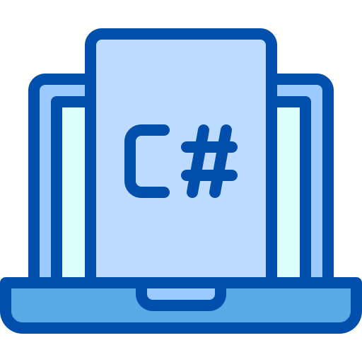
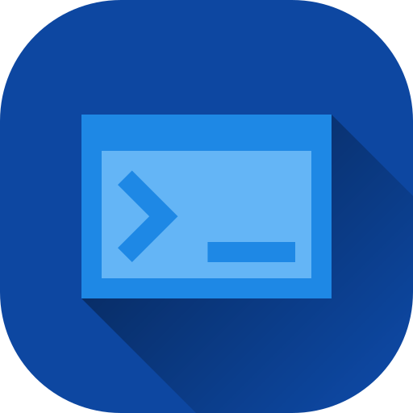

.NET es una plataforma de desarrollo de software desarrollada por Microsoft. Se utiliza para construir una variedad de aplicaciones, desde aplicaciones de escritorio hasta aplicaciones web y servicios en la nube. Veamos sus partes principales.
Lenguajes mas usados en .NET
.NET es un entorno de desarrollo que admite varios lenguajes de programación. Algunos de los lenguajes más populares que se pueden utilizar en la plataforma .NET incluyen:
VB.NET: Visual Basic .NET (VB.NET) es otro lenguaje de programación compatible con .NET. Es una evolución de Visual Basic y ofrece una sintaxis más moderna y características avanzadas para el desarrollo de aplicaciones.

C++/CLI: C++/CLI es una extensión del lenguaje C++ que permite interactuar de manera más cercana con el Common Language Runtime (CLR) de .NET. Se utiliza a menudo cuando se necesita un alto grado de control y acceso a características específicas de .NET.
C#: C# (pronunciado "C sharp") es el lenguaje de programación principal y más utilizado en la plataforma .NET. Es un lenguaje moderno y orientado a objetos que se utiliza ampliamente para desarrollar una variedad de aplicaciones, desde aplicaciones de escritorio hasta aplicaciones web y servicios en la nube.
J#
J# (J Sharp) era un lenguaje de programación desarrollado por Microsoft que estaba destinado a ser utilizado en la plataforma .NET. Sin embargo, J# ya no se encuentra activamente soportado ni se incluye en las versiones más recientes de la plataforma .NET. La última versión de J# fue lanzada como parte de Visual Studio 2005.
Otros Lenguajes usados en .NET

F#: F# es un lenguaje de programación funcional que se ejecuta en la plataforma .NET. Está diseñado para programación funcional y es adecuado para aplicaciones matemáticas y científicas, entre otros usos.

IronPython: IronPython es una implementación del lenguaje de programación Python que se ejecuta en la plataforma .NET. Permite a los desarrolladores aprovechar la sintaxis y las bibliotecas de Python en aplicaciones .NET.

IronRuby: Similar a IronPython, IronRuby es una implementación del lenguaje de programación Ruby que se ejecuta en .NET. Permite a los desarrolladores utilizar Ruby en aplicaciones .NET.
PowerShell: PowerShell es un lenguaje de scripting y automatización de tareas que se ejecuta en la plataforma .NET. Es ampliamente utilizado para administrar sistemas Windows y aplicaciones en entornos empresariales.